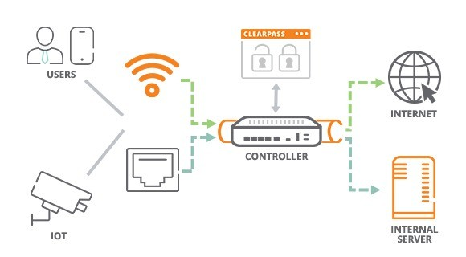

Tipos de Segmentación
La segmentación de redes se implementa principalmente de tres formas:
física,lógica (VLAN) y
microsegmentación.
Analogía: Oficinas con muros
Cada departamento está en una oficina distinta, con muros
ycableado propio.Si pasa algo en una oficina, las demás no se
afectan.
- Aislamiento total por separación física.
- Rígido y costoso de cambiar.
Segmentación Física
Definición
Divide la red a nivel de Capa 2/3 usando VLANs
ycontrola el tráfico entre segmentoscon enrutamiento/ACL/Firewall, reutilizando la misma
infraestructura física.
Analogía
Es como una gran caja con separadores de colores
yetiquetas.Todos los juguetes están en la misma caja, pero cada color es su
propiogrupo.
- Cada separador de color es una “VLAN”.
- Si cambias la etiqueta de un juguete, lo pasas a otro grupo
sincambiar de caja.
- Para que dos grupos se hablen, un adulto abre una puerta
especial(el “firewall/router”).

Analogía: Edificio con tarjetas de acceso
Un solo edificio y cableado, pero accesos controlados
portarjeta.Puedes cambiar permisos sin reconstruir nada.
- Flexible y eficiente en costos.
- Requiere configuración correcta (VLAN, ACL,
inter-VLANen firewall).
Segmentación Lógica (VLAN)
Definición
Aplica políticas a nivel de carga de trabajo (host, VM,
contenedor)mediante agentes o SDN,siguiendo Zero Trust: solo se permite lo
necesario.
Analogía para niños
Imagina que cada juguete tiene su propio walkie-talkiey
una lista de amigos.Solo puede hablar con quienes están en su lista.
- Cada juguete tiene reglas personales de con quién puede hablar.
- Si un juguete se “porta mal”, no molesta a los demás porque nopuede
hablarles.
- Las conversaciones son a la medida de cada juguete.
Analogía: Guardias por persona
Cada dispositivo/servicio tiene un guardia personal
quedecide con quién puede hablar y qué puede hacer.Si uno se infecta, el
resto no queda expuesto.
- Control granular por aplicación/host.
- Mayor complejidad y necesidad devisibilidad/telemetría.
Micro-segmentación
Definición
Consiste en separar la red con hardware y cableado
independientes(switches/routers dedicados, enlaces propios). Ofrece el
mayor aislamiento entredominios.
Analogía
Imagina que tienes tres cajas de juguetes, cada una en
cuartosdistintos.Los juguetes de una caja no se mezclan con los de las
otras.
- Cada caja es como una “mini red” aparte.
- Si se derrama jugo en una caja, las otras no se manchan.
- Para usar un juguete de otra caja hay que cambiar de cuarto.